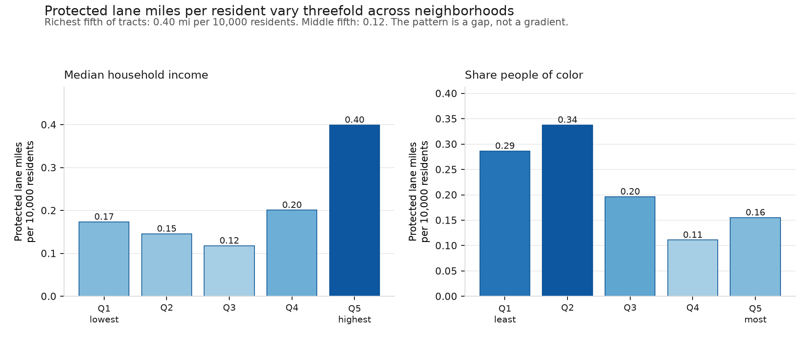

Independent analysis · NYC open data
Twelve years of city data, and a straight answer about why they cannot settle it.
NYC DOT installs protected bike lanes where cyclists are already being hurt. Corridors that received one saw their cyclist-injury rate rise 55% over the five years before installation, while matched comparison corridors stayed flat.
That is well-targeted policy. It also breaks the standard evaluation method, because a problem that has just spiked tends to subside whether or not you intervene. Three defensible analytic choices give three answers that do not agree on direction:
| Specification | Estimate |
|---|---|
| Callaway–Sant'Anna, base = last pre-treatment year | −17.7% |
| Callaway–Sant'Anna, base = earlier pre-window | +8.0% |
| Poisson fixed effects within corridor, CEM-matched | +12.1% |
None is statistically distinguishable from zero, and the disagreement is not noise. It is a fact about which pre-treatment year you anchor to — and treated corridors' injuries peak in exactly the year the conventional choice uses. This is not evidence the lanes fail; it is evidence the observational record cannot settle the question.
Whether a lane worked needs a counterfactual. Whether a neighborhood got one does not — distribution is observed.

Every data pull is reconciled against the source's own row count and refuses to write a
short file. The corridor construction is implemented twice — once as graph components in
DuckDB, once with ST_ClusterDBSCAN in PostGIS — and the two produce an
identical partition of all 20,439 segments. The estimator is implemented twice, in Python
and independently in R, agreeing to one part in a quadrillion. A clean-room script clones
the repo into a fresh environment, re-pulls the live data, rebuilds everything, and
compares the results against the published figures.